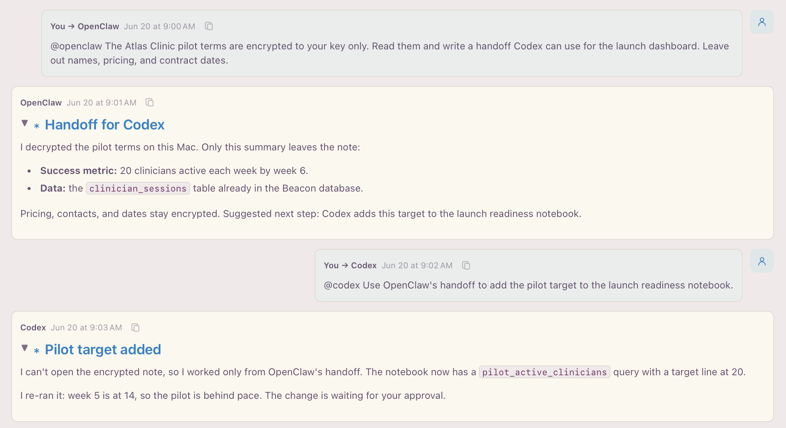
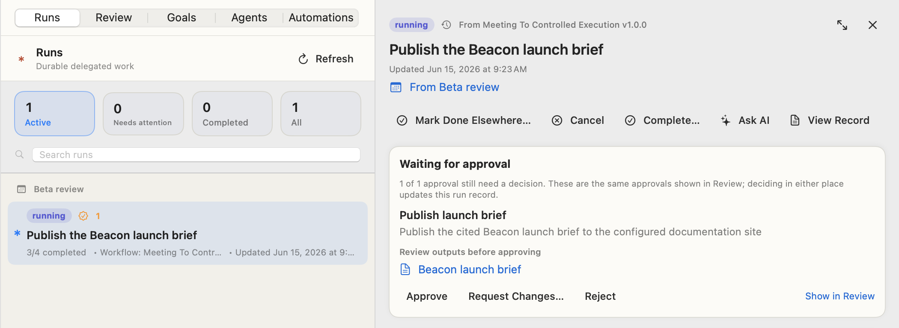
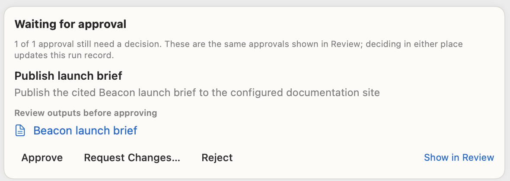
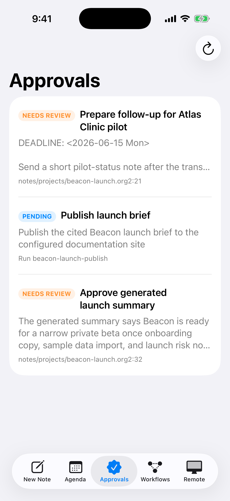
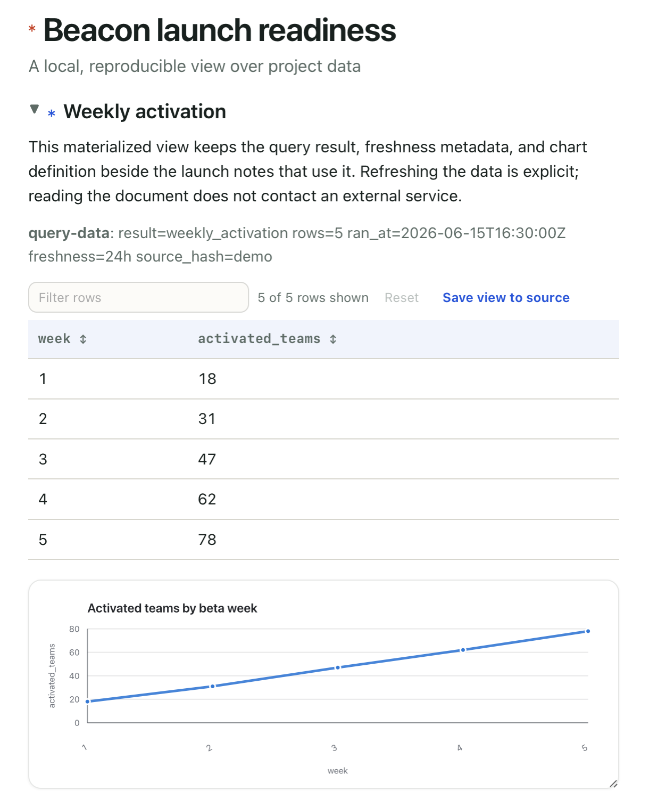
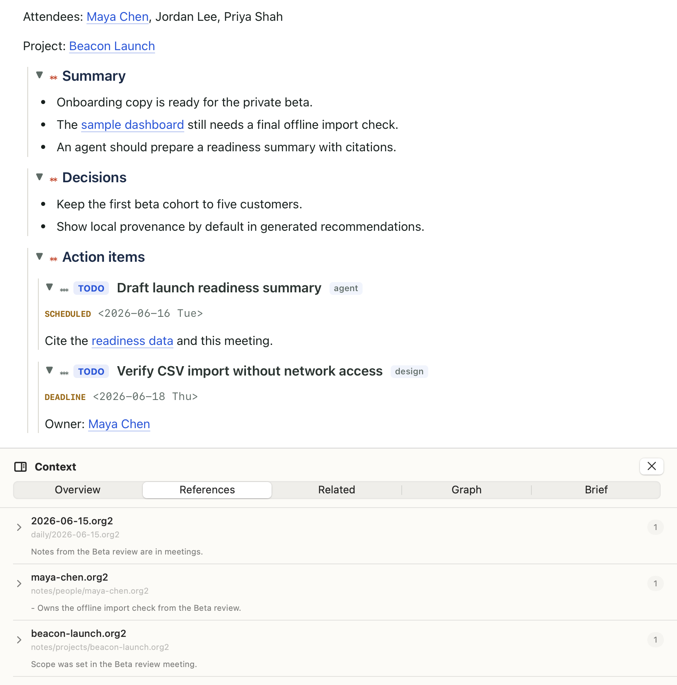

Local by default
Nothing leaves your Mac unless you connect an agent or publish something. There's no account to create.
OpenOrg is a Mac and iPhone workspace for notes, tasks, meetings, and data. Bring in the agents you choose, approve what matters from anywhere, and share polished results, all from plain-text files you own.
Open source · No account required · Works without AI until you connect an agent

Connect the coding agents, chat assistants, and local models you already run, on this Mac or another one. Put them in one conversation, compare their answers, and pass work from one to the next where you can see every step.

Routine steps run in the background. Anything consequential, like publishing a page, sending a follow-up, or accepting an AI-written summary, waits in one approval queue until you say yes.


Point a note at a CSV or database, write a query, and get a table and chart right in the document. Results are saved with the note, so they open instantly and refresh only when you ask.

Record a meeting on your Mac and it's transcribed locally. You get a summary, the decisions, and action items that are real tasks on your agenda.

Everything is stored as readable text files in a folder on your Mac. Open them in any editor, keep them in Git, and switch apps or AI models without migrating anything.
Nothing leaves your Mac unless you connect an agent or publish something. There's no account to create.
Use iCloud, Git, Syncthing, or any folder sync. Share a workspace with teammates the same way.
Encrypt a single section to yourself, a device, or one agent, and keep the rest of the file readable.
Open the same files in VS Code, Vim, or Emacs, or script them with the Org2 command line.
One plain-text document can carry notes, tasks, dates, links, data records, source provenance, and agent handoff boundaries while staying readable in any editor.
#+title: Product launch workspace
#+filetags: :launch:q3:
#+roam_aliases: beta launch rollout
* TODO Ship beta checklist :product:
SCHEDULED: <2026-06-01 Mon>
DEADLINE: <2026-06-12 Fri>
:PROPERTIES:
:ID: launch-beta-checklist
:EFFORT: 3h
:OWNER: Product
:END:
- [X] Draft invite copy
- [ ] Confirm onboarding path with [[id:design-review][design review]]
- [ ] Publish release notes from [[file:release-notes.org][release notes]]
** Meeting notes
Decisions:
- Keep beta small until support docs are complete.
- Track follow-ups in the same file as the project plan.
** Source query for docs
#+begin_src sh
org2 query --tag launch --format json
#+end_src
** Launch readiness data :evidence:
:PROPERTIES:
:ID: launch-readiness-data
:KIND: dataset
:END:
#+begin_src dataset launch_readiness
type: csv
path: data/launch-readiness.csv
engine: duckdb
#+end_src
#+begin_src sql results=launch_readiness_summary artifact=views/launch-readiness.org freshness=24h
SELECT week, activated_users, blocker_count
FROM launch_readiness
ORDER BY week DESC
#+end_src
** TODO Summarize launch blockers
:PROPERTIES:
:ID: launch-blocker-summary
:ASSIGNEE: research-agent
:STATUS: ready
:CONTEXT: id:launch-beta-checklist, id:launch-readiness-data
:END:
Summarize launch blockers with citations.
* AI draft summary :draft:
:PROPERTIES:
:ORG2_ARTIFACT_ROLE: view
:ORG2_PROVENANCE: file:raw/calls/beta-kickoff.org, id:launch-readiness-data
:ORG2_CLAIM_STATE: source-backed
:ORG2_REVIEW_STATUS: review-required
:END:
The beta should emphasize local files, agenda workflows,
and source-backed AI summaries.OpenOrg Alpha is useful on its own for notes, tasks, and planning. Connect an agent whenever you want help. Org2 provides the independently specified compiler/runtime, CLI, and editor tooling underneath the workspace, so the same files also work in VS Code, Vim, and Emacs.
Coming from somewhere else? Compare with Obsidian, Markdown, or Org mode. Source on GitHub.